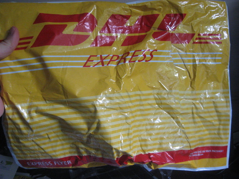
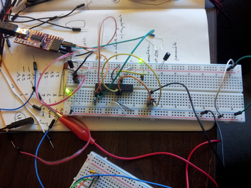
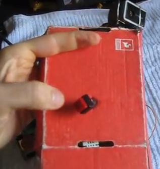
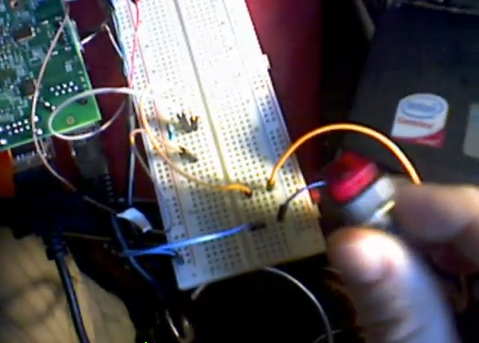
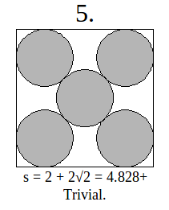

- I contribute to Public Lab as “donblair”;
- I post on Pioneer Valley Open Science as "Don";
- I’m on github as “dwblair”;
- I’m on Twitter as “donwblair”;
- I’m on Skype as “dwingateb”;
- Please email me at “donblair at pvos dot org”.
Recent Notes, Tweets, Pics ...
|  | OLM Arrives! -- May 13, 2013 Circuit boards are here! |
|  | OLM Notes -- April 23, 2013 Breadboarding the OLM; Next steps ... |
|  | Ircam Buttons and Motors -- April 22, 2013 Notes on buttons and motors on a Raspberry Pi |
|  | Updates -- April 7, 2013 Mostly about work on a Raspberry Pi project for Public Lab. |
|  | Packing Algorithms -- March 13, 2013 Some notes about some packing algorithms I've been working on recently. |
Tweets by @donwblair
www.flickr.com
|